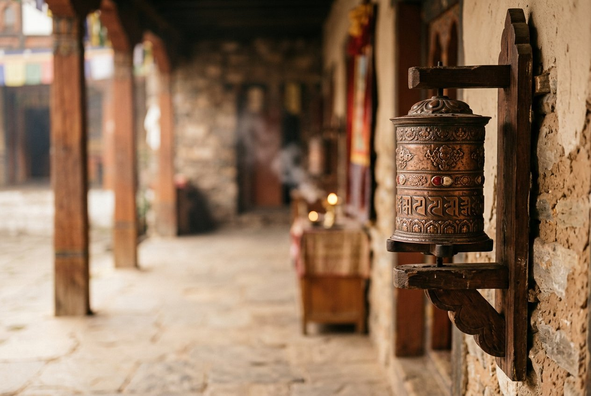

MANI-GEBETSMÜHLE · MANTRA · MITGEFÜHL
Gebetsmühle: Bedeutung, Geschichte und Tradition des Drehens
Mitunter wird die tibetische Mani-Gebetsmühle als „Gebetstrommel“ bezeichnet: ein hohler Zylinder, der um eine Achse gedreht und nicht geschlagen wird. Im tibetischen Buddhismus verbindet man das Drehen mit Mantra-Rezitation und einer mitfühlenden Absicht.

IM INNEREN DES ZYLINDERS
Eine Mantrarolle um die Achse
Eine handgehaltene Mani-Gebetsmühle enthält meist eine Rolle oder einen Streifen mit vielfach gedrucktem Mantra; moderne Ausführungen können Mikrofilm verwenden. Häufig ist es „Om mani padme hum“, das mit Avalokiteshvara verbunden wird, doch die Texte können variieren. Dasselbe Mantra steht oft auch außen auf dem Zylinder.
Der Aufbau umfasst meist Griff, Achse und drehbaren Zylinder. Größe und Material variieren vom kleinen Handgerät bis zu Reihen großer Tempelgebetsmühlen.
WARUM MAN SIE DREHT
Gebet, Bewegung und Widmung
Für Praktizierende ist das Drehen eine rituelle Geste, begleitet von lautem, leisem oder innerem Rezitieren. Die Bewegung kann einen Rhythmus geben und die Aufmerksamkeit zu Worten, Bild oder mitfühlender Absicht zurückführen.
Manche Erklärungen im tibetischen Buddhismus verbinden das Drehen mit dem Ansammeln von Verdienst und dem Wohl der Wesen. Dies ist eine religiöse Vorstellung der Tradition, kein messbares Wirkversprechen. Häufig wird die Praxis mit der Widmung einer guten Absicht an alle Wesen abgeschlossen.
HAND- UND TEMPELGEBETSMÜHLEN
Verschiedene Formen einer Praxis
Ein Handgebetsrad wird am Griff mit einer kleinen Bewegung des Handgelenks gedreht. In Klöstern und an heiligen Orten gibt es befestigte Räder für Besucher sowie größere Tempelanlagen. Die betende Umrundung einer Stupa ist eine eigene Praxis, die manchmal mit dem Drehen einer Mani-Gebetsmühle verbunden wird.
Traditionen geben eigene Hinweise zur Drehrichtung, Rezitation und zum Umgang mit Ritualgegenständen. In einer Gemeinschaft folgen Sie den Anleitungen der Lehrenden; im persönlichen Gebet zählen Aufmerksamkeit und Respekt mehr als Geschwindigkeit.
DIGITALES FORMAT
Ein Bildschirm ersetzt kein Tempelobjekt
Eine Online-Gebetsmühle bietet eine moderne Möglichkeit, innezuhalten, sich auf einen Wunsch zu konzentrieren und ihn visuell zu begleiten. Sie ist kein physischer Ritualgegenstand und bildet die Praxis einer bestimmten buddhistischen Linie nicht vollständig nach.
Auf der Startseite können Sie die Zahl der Umdrehungen wählen und die lokale Animation starten. Der Testbildschirm zeigt nur Beispielbeträge: Es ist kein Zahlungsanbieter angebunden, es wird nichts abgebucht und Kartendaten werden nicht abgefragt.